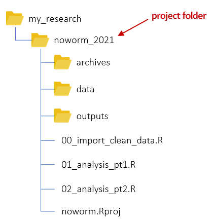

Spatial Data Analysis
with R
BayGeo, Spring
2022
Working with Files and Folders
Where’s My Data?
water_df <- read.csv("c:/users/andy/desktop/research/summer21/carp/plots/tr45/wtr-tmps-jul17-23.csv")
## Warning in file(file, "rt"): cannot open file 'c:/users/andy/desktop/research/summer21/carp/plots/tr45/wtr-tmps-
## jul17-23.csv': No such file or directory
## Error in file(file, "rt"): cannot open the connection
The Challenge
When you import or export objects to disk with code,
you don’t have the luxury of an ‘Open…’ or ‘Save As…’ dialog.
You have to specify the file path in code.
Understanding files and folders is particularly important when:
- importing or exporting data from disk
- saving scripts and notebooks
- reorganizing your hard drive
- migrating to a new machine
Performance goals: write code that
- doesn’t cause ‘file not found’ errors
- doesn’t break when you move your project
- is reproducible on different machines
Working Directory
Important Concept:
There is always a working directory.
You can see the working directory with getwd():
## [1] "C:/Users/Andy/Documents"
Changing the Working
Directory
You can change the working directory with setwd().
setwd("c:/projects/soc101/sf_census/")
1) You can also set the working directory from the RStudio
Session menu.
2) If you open a RStudio Project, the working directory defaults to
the Project folder.
Absolute File Paths
An absolute file path starts with '/', which indicates
the root directory.
It may also include a volume (drive letter 'C:/').
Examples:
## Define a file that begins with the root directory (on the current drive / volumne)
x <- "c:/temp/ca_bnd.geojson"
file.exists(x)
## [1] TRUE
## Another one, with a drive letter
x <- "/temp/ca_bnd.geojson"
file.exists(x)
## [1] TRUE
Windows users: Beware the slashes!
R always requires forward slashes (/) in file paths, not
back slashes (\).
The following will not work beause of the slashes:
C:\noworm\trials\data →
ERROR!
Back slashes must be converted to one of the following:
C:/noworm/trials/data
C:\\noworm\\trials\\data
Relative File Paths
Relative file paths make your code more
portable.
If you use a relative file path in your code, it starts
working directory
To use the working directory in a path, start with
".".
Example: List files in the current working
directory.
## List the files in the current working directory
list.files(".")
list.files() also lists directories
Optional arguments let you specify a pattern, recurse subdirectories,
etc.
Subdirectories
To list files in a subdirectory of the working
directory:
list.files("./mysubfolder")
Here "./mysubfolder" tells R to start at the working
directory, and then go into ‘mysubfolder’.
List all the Shapefiles in the data directory.
## List the Shapefiles in the 'data' directory
list.files("./data", pattern = "*.shp")
File names on Windows are not case sensitive, but for
compatibility across platforms make it a practice to match the case.
Example: Import a csv
You can import a csv file using read.csv(x), where
x is the name of a file.
## First, save the path and file name to a variable
csv_fn <- "./data/sf_libraries.csv"
## See if it exists
file.exists(csv_fn)
## Import
my_data <- read.csv(csv_fn)
What type of object (class) does read.csv() return?
Answer
‘Home’ Directory
The ‘Home’ directory is usually your Documents
folder. Example;
C:/Users/Andy/Documents
You can tell R to start in the Home directory with the
~ character:
## List files in your 'Home' directory
list.files("~")
Utility Functions
file.exists()
- verifies whether you’ve typed in a file path correctly
file.choose()
- opens a file selection dialog, allows you to pick a file, and
returns the name.
## Select a file
x <- file.choose()
## View x
x
file.path()
- lets you concatenate folders and files to construct a syntactically
valid name:
## Construct a complete file name from a set of directories and a file name
file.path("~", "BaseLayers", "California", "Parks.shp")
## [1] "~/BaseLayers/California/Parks.shp"
file_path_as_absolute()
- shows you the absolute path for any folder
## View the expanded path of the 'data' folder
tools::file_path_as_absolute("./data")
RStudio File Features
| Organize your work in RStudio Projects,
and peace with your files you will have. |
1) RStudio Projects
When you open an RStudio project, RStudio automatically sets the
working directory to the project directory.
Thus if you put everything under the project folder, you can use
relative links for everything.

2) RStudio Files Pane
Use the Files tab to browse your files, open R
files, and set the working directory.

You can open many files by clicking on them in Files pane:
*.R, *.txt, *.css - clicking
will open for editing
*.RData, *.rda - clicking will import them
into RStudio
3) Import Dataset Wizard
Saving R Objects to Disk
You can save individual objects (variables) to disk with
save().
## Create 1000 random values
rnd_vals <- rnorm(1000) * 20
## Save to the Home directory
save(rnd_vals, file="~/my_random_numbers.RData")
.RData and .Rda are common
extensions for R data files, but you can name your file anything you
want.
To save multiple objects to the same file, use the
list argument:
save(list = c(“x”, “y”), file = “~/xy.RData”)
To save your entire workspace (all
variables in memory), use save.image(). RStudio also has a
‘Save Workspace’ button on the ‘Environment’ window, and will probably
ask if you want to save your workspace when you quit the program.
Load Saved Objects Back into
R
save() stores objects in a binary, compressed file
format that R understands. This makes it very flexible and easy to bring
back into R using the sister function
load().
## Delete rnd_vals from memory
rm(rnd_vals)
ls()
## Load the saved file
load("~/my_random_numbers.RData")
## View objects in memory. (rnd_vals should be back!)
ls()
Summary
Importing and exporting data typically requires passing a
file name and/or a directory name.
File names are in reference to the current Working
Directory, which you specify with the
‘.’
The ‘Home’ Directory ('~') is a good place to store
things you use frequently.
Convenience functions like file.exists() and
list.files() can make your life easier.
Next: Importing and
Plotting Vector Data